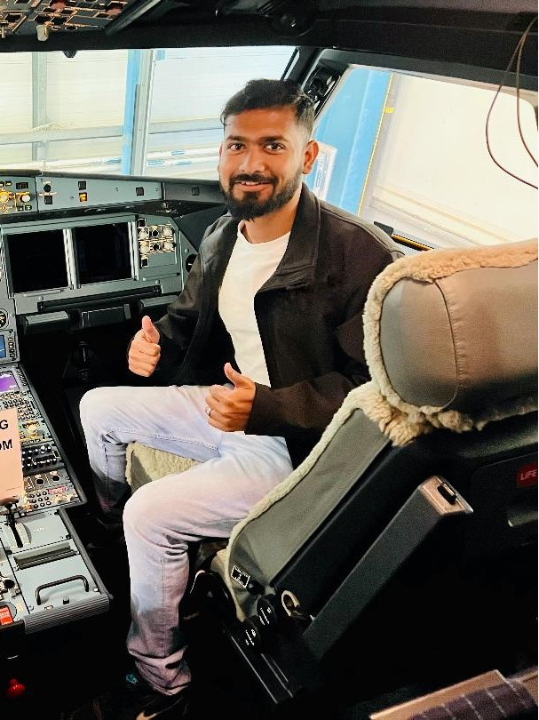
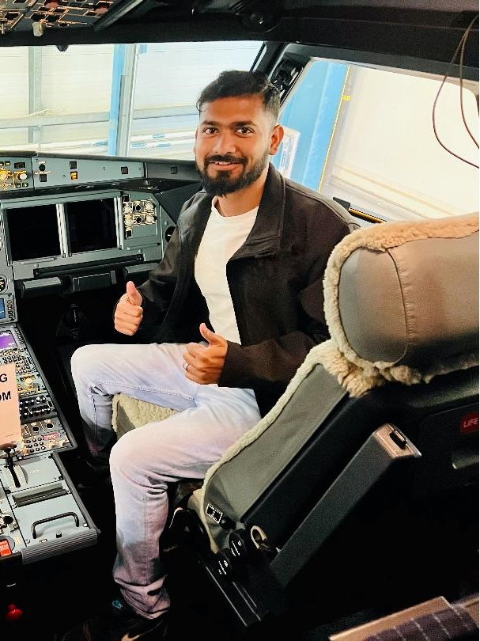

My Journey in Aerospace Engineering
A brief story about how I started in aerospace engineering...
Read moreAerospace Engineer | Aviation Expert | Customer Service Professional
A dedicated aerospace professional with over three years of experience in technical records management, airworthiness compliance, and customer support within the aviation industry. Skilled in managing "Back-To-Birth" (BTB) investigations, handling technical documentation, and ensuring compliance with EASA Part-M and Part-145 regulations. Known for strong attention to detail, problem-solving abilities, and effective communication, with a commitment to maintaining high standards in documentation and compliance processes.
A dedicated aerospace professional with over three years of experience...
With expertise in Airworthiness Directives (ADs), I offer comprehensive guidance to maintain fleet compliance with the latest FAA, EASA, and UKCAA standards. Each directive is meticulously reviewed to ensure aircraft safety and regulatory adherence.
Managing the full scope of Service Bulletins (SBs), from assessment through to modification planning, I focus on smooth, efficient implementation that upholds operational standards and minimizes disruptions.
Skilled in developing accurate, regulatory-compliant work instructions and technical documentation, I support ADs, SBs, Supplemental Type Certificates (STCs), and modification kits. Each document is crafted to facilitate streamlined maintenance tasks and maintain compliance.
Experienced in conducting detailed evaluations of ADs, SBs, and SLs, I support Back-To-Birth (BTB) investigations to confirm that all modifications meet regulatory and customer standards. Regular review of technical data from Airbus, Boeing, and other manufacturers ensures precise, reliable records to support fleet airworthiness.
I provide in-depth support in reviewing and updating Aircraft Maintenance Programs (AMPs), aligning tasks with the Maintenance Planning Document (MPD) for optimized fleet performance and safety.
By identifying areas for improvement within maintenance processes, I work toward reducing delays, enhancing compliance, and boosting operational reliability. The focus remains on creating sustainable solutions that align with both regulatory requirements and operational goals.
 

A brief story about how I started in aerospace engineering...
Read moreSharing some key insights from my experience in aviation maintenance...
Read moreIf you’re interested in connecting or discussing job opportunities, feel free to reach out.